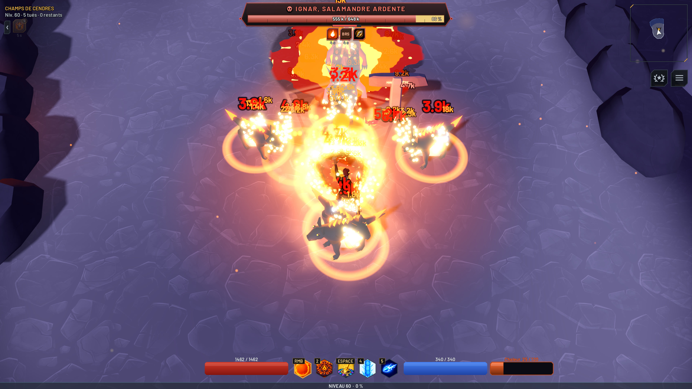

Braises et embruns
Le feu repensé de fond en comble, de vraies musiques, des ambiances enregistrées et des sorts qui s'enchaînent librement.
Le feu repensé de fond en comble, de vraies musiques et des ambiances enregistrées, des sorts qui s'enchaînent enfin librement. Bon jeu !
Le feu repensé
Un ennemi peut brûler jusqu'à quatre fois à la fois, chaque embrasement avec ses dégâts. Toucher un ennemi embrasé propage le feu à son voisin, le Brasier laisse un sol en feu et la Boule de feu sait revenir vers vous.

Des sorts qui s'enchaînent
Chaque compétence attend son propre temps d'incantation, mais vous pouvez lancer un autre sort, vous téléporter ou boire un élixir pendant ce temps. Fini le Météore qui bloque le Clignement.
Musique et ambiance
Un thème composé par acte, plus le refuge, l'arène et les boss. Oiseaux en forêt, vent du désert, grondement du volcan, vagues et mouettes sur la côte.
Notes de version
Le feu
- Embrasements multiples : un ennemi peut brûler plusieurs fois à la fois (jusqu'à 4), chaque embrasement inflige ses propres dégâts. Trois façons d'en gagner : le support Double embrasement, le nœud de classe Bûcher et le talent majeur Flammes jumelles.
- Nouveau support Brûlure attisée : +60 % de dégâts d'embrasement pour la compétence liée.
- Propagation : toucher un ennemi déjà embrasé avec un sort de feu propage le feu à son voisin.
- Brasier fonctionne enfin : les sorts de feu à effet de zone laissent un brasier au sol qui brûle et embrase les ennemis.
- Chaleur contagieuse : un ennemi qui brûle peut embraser son voisin (ce n'est plus un doublon de Feu sauvage).
- Surchauffe : la jauge se vide pendant l'effet puis repart de zéro (avant, un seul sort suffisait à la relancer), et le bonus est affiché avec les autres effets.
- Boule de feu plus lente et à plus courte portée. Avec Retour, elle explose à l'impact ou en fin de course puis revient vers vous ; si elle touche un ennemi au retour, elle réexplose. La perforation la fait traverser.
- Brûlure profonde affaiblie (+8 % au lieu de +15 %).
- Un seul mot partout : on embrase un ennemi.
Sorts et compétences
- Enchaînez vos sorts : chaque compétence attend son propre temps d'incantation, mais vous pouvez lancer un autre sort, vous téléporter ou boire un élixir pendant ce temps. Fini le Météore qui bloque le Clignement !
- Archer Rapide ne s'applique plus aux sorts ; nouveau support Sorcier Rapide (+30 % de vitesse d'incantation pour les sorts de projectile).
- Météore : la zone d'avertissement correspond exactement à la zone touchée, et le sol en feu est bien visible, y compris dans les arènes de boss.
- Sol en feu tout neuf (Météore, Brasier, Traînée de feu) ; plusieurs zones superposées n'infligent pas plus de dégâts.
- Élixir de Sprint : +30 % de vitesse (au lieu de 45 %). Élixir de Rage : plus de vitesse de déplacement. Concoction puissante : +20 % d'effet, sans changer la durée.
Talents
- Chaque nœud donne un effet fort et un petit, plus de nœuds à quatre lignes.
- Plus aucun chemin de quatre nœuds : des chemins de deux ou trois nœuds, plus nombreux, avec 34 nouveaux nœuds dans les onze arbres des dieux.
Musique et ambiance
- De vraies musiques composées : un thème par acte, plus le refuge, l'arène et les boss. En zone, la musique laisse place à des moments de calme.
- Ambiances enregistrées : oiseaux en forêt, vent du désert, grondement du volcan, vagues et mouettes sur la côte et au refuge.
- La musique et l'ambiance changent correctement d'une carte à l'autre (l'acte I ne fait plus entendre la plage).
Interface
- Cadre de cible compact, avec les altérations affichées dessous ; il ne clignote plus.
- Barre de bouclier d'énergie d'un bleu franc, sans trait parasite quand elle est pleine.
- Cliquer un emplacement de compétence ou de support place directement le curseur dans la recherche.
- Plus de message « Support débloqué » quand on ouvre un emplacement avec de l'énergie.
- La fiche du personnage affiche la chance d'embraser, les dégâts d'embrasement et le nombre d'embrasements simultanés.